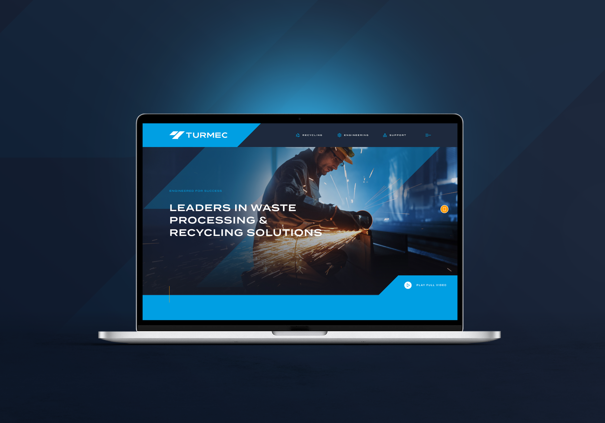
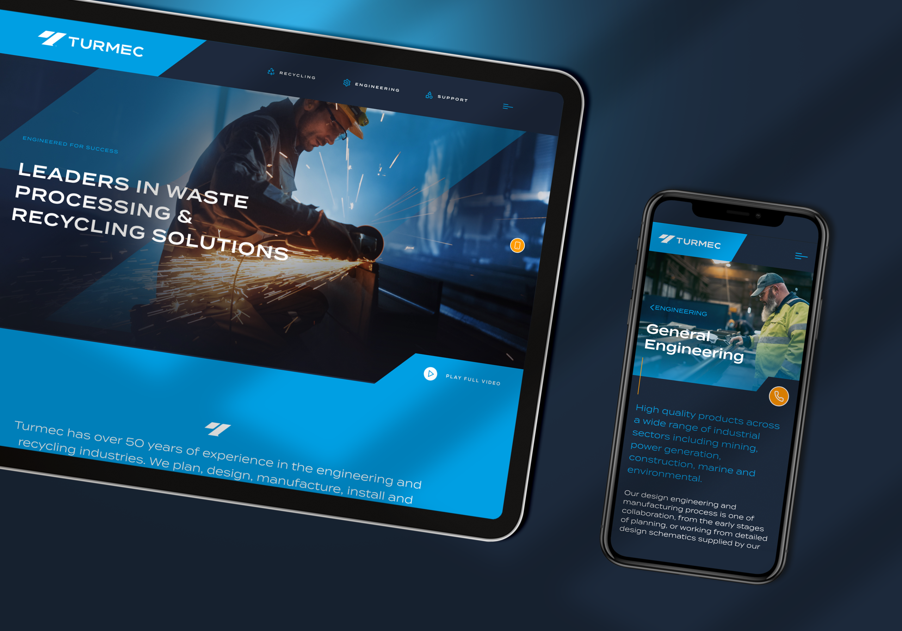
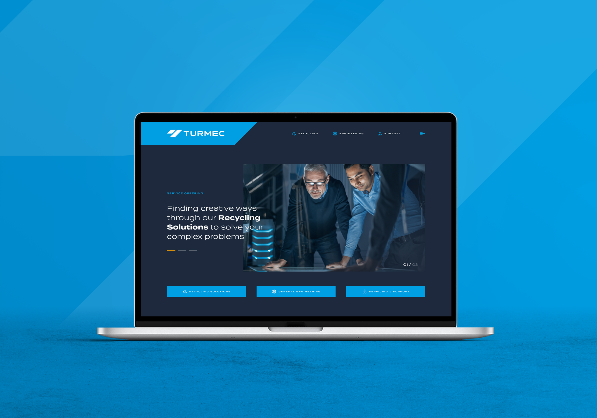
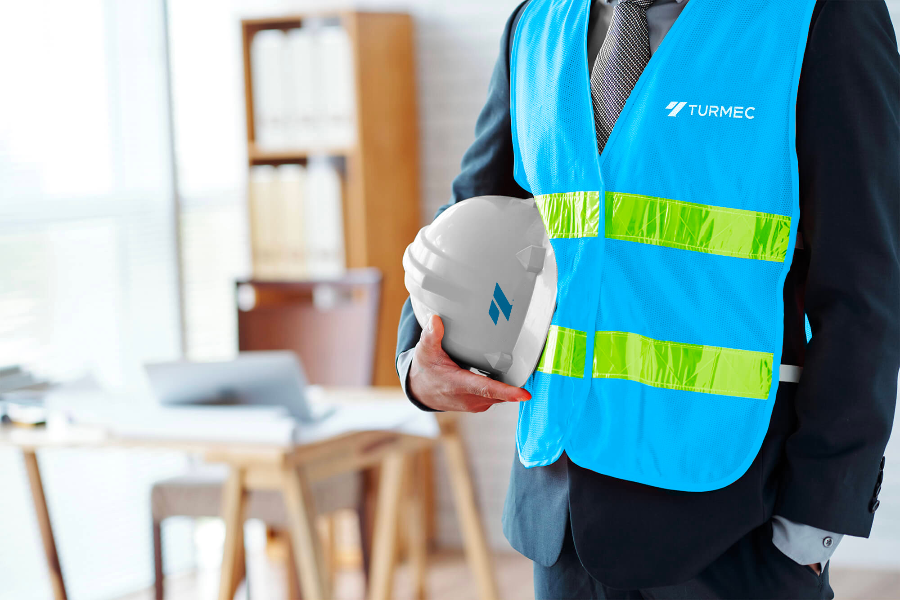

Work / 2024
Turmec
Engineered for Success
Turmec is a global leader in recycling solutions. The company needed a brand refresh that matched its innovative, sustainable engineering, and a digital presence that could communicate a wide range of solutions to clients and investors around the world.
Unifying a diverse offering
Turmec's impact spans many recycling sectors, so the first task was clarity: a cohesive framework that communicates one vision while flexing across the different solutions the company provides. I designed the system to keep tone, design and user experience consistent, with a tailored approach for each sector served.



Real machines, real people
The story is told through custom visual assets of Turmec's equipment and engineering teams in action, genuine, impactful imagery rather than stock photography. Strategic colour, typography and layout highlight the company's strengths and give the brand an authentic, confident voice.

A flexible digital platform
I designed a user-friendly, intuitive website with clear navigation and storytelling at its core, built for easy content management and future growth. The refreshed identity and platform position Turmec as a forward-thinking leader in waste management and engineering, differentiated in a competitive global market.